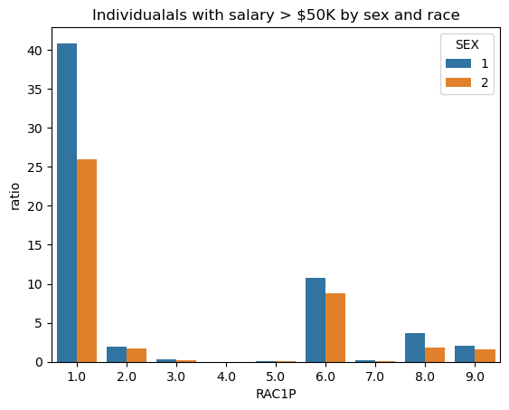

A blog post on allocative bias in machine learning
Author
Eduardo Pareja Lema
Published
May 2, 2023
Goal
The goal of this blog post is to create a machine learning model that predicts an individual characteristic (in this case income) based on the basis of other demographic characteristics. We use the folktables package, which allows you to download and neatly organize data from the American Community Survey’s Public Use Microdata Sample (PUMS).
Once we trained a model, we will perform a fairness audit in order to assess whether or not the algorithm displays bias with respect to demographic characteristics like race or sex
The Problem
In this blog post we will predict whether an individual’s income in the state of California is over $50k based on demographic characteristics (excluding sex), and then audit for gender bias.
We consider the following demographic characteristics along with their respective feature code: Age (AGEP), Class of worker (COW), Educational Attainment (SCHL), Marital Status (MAR), Occupation (OCCP), Relationship (RELP), Usual hours worked per week past 12 months (WKHP), Recoded detailed race code (RAC1P), Disbility code (DIS), Employment status of parents (ESP), and Citizenship Status (CIT).
Let’s download the data and import some dependencies:
from folktables import ACSDataSource, ACSEmployment, BasicProblem, adult_filterimport numpy as npSTATE ="CA"data_source = ACSDataSource(survey_year='2018', horizon='1-Year', survey='person')acs_data = data_source.get_data(states=[STATE], download=True)acs_data.head()
RT
SERIALNO
DIVISION
SPORDER
PUMA
REGION
ST
ADJINC
PWGTP
AGEP
...
PWGTP71
PWGTP72
PWGTP73
PWGTP74
PWGTP75
PWGTP76
PWGTP77
PWGTP78
PWGTP79
PWGTP80
0
P
2018GQ0000004
9
1
3701
4
6
1013097
32
30
...
34
60
60
7
8
59
33
8
58
32
1
P
2018GQ0000013
9
1
7306
4
6
1013097
45
18
...
0
0
0
91
46
46
0
89
45
0
2
P
2018GQ0000016
9
1
3755
4
6
1013097
109
69
...
105
232
226
110
114
217
2
111
2
106
3
P
2018GQ0000020
9
1
7319
4
6
1013097
34
25
...
67
0
34
34
69
0
34
35
0
0
4
P
2018GQ0000027
9
1
6511
4
6
1013097
46
31
...
47
81
10
11
79
47
44
81
47
10
5 rows × 286 columns
We now filter the features we will use for the problem stated above:
We now construct a BasicProblem, which expresses our desire to use the features above to predict if an individual has a salary greater than $50k (PINCP) using sex (SEX) as the group label. Note that a 1 represents a Male and 2 a Female.
EmploymentProblem = BasicProblem( features=features_to_use, target='PINCP',#Transform the column to check if salary > 50k target_transform=lambda x: x >50000, group='SEX', preprocess=adult_filter, postprocess=lambda x: np.nan_to_num(x, -1),)features, label, group = EmploymentProblem.df_to_numpy(acs_data)
We can now prepare our data for training (and testing):
Before we train our model, let’s explore our data using a DataFrame.
import pandas as pd df = pd.DataFrame(X_train, columns=features_to_use)# Add a column for the group (1 for male, 2 for female)df['SEX'] = group_train# Add a column for the label, (True if >50k, False else)df['SALARY>50k'] = y_traindf.head()
AGEP
COW
SCHL
MAR
OCCP
RELP
WKHP
RAC1P
DIS
ESP
CIT
SEX
SALARY>50k
0
46.0
2.0
22.0
1.0
1821.0
0.0
45.0
9.0
2.0
0.0
1.0
2
True
1
45.0
1.0
21.0
3.0
4850.0
13.0
50.0
1.0
2.0
0.0
1.0
2
True
2
40.0
1.0
21.0
5.0
1021.0
5.0
40.0
6.0
2.0
0.0
4.0
2
True
3
59.0
1.0
24.0
1.0
300.0
0.0
40.0
6.0
2.0
0.0
4.0
1
True
4
23.0
1.0
19.0
5.0
3401.0
11.0
40.0
1.0
2.0
0.0
1.0
2
False
df.shape
(156532, 13)
Based on the dimension of our DataFrame, our training data has information for about 156532 individuals (and 13 features for each).
Of these individuals, 41.08% have a salary higher than $50K has showed in the following table:
Of those individuals with a salary greater than $50K, roughly 59.83% are male while 40.17% are female.
# Filter only those individuals with salary greater than $50kfilter_by_salary = df[df['SALARY>50k']==True]high_salary_sex = filter_by_salary.groupby('SEX').size().reset_index(name='count')high_salary_sex['ratio'] = (high_salary_sex['count'] / filter_by_salary.shape[0] *100).round(2)high_salary_sex
SEX
count
ratio
0
1
38472
59.83
1
2
25828
40.17
Similarly, we find that based on the tables below, 47% of male individuals and 37% of female individuals have an income greater than $50K.
It is also possible to investigate intersectionality trends in our data by studying the proportion of positive target labels broken down by SEX and an additional group label. In this case, let us investigate the intersectionality trends between SEX and RAC1P.
Recall that RAC1P stands for the race of the individuals (1 for White Alone, 2 for Black/African American alone, 3 for Native American alone, 4 for Alaska Native alone, 5 for Native American and Alaska Native tribes specified, 6 for Asian alone, 7 for Native Hawaiian and Other Pacific Islander alone, 8 for Some Other Race alone, 9 for two or more races).
Let’s create a new DataFrame holding the desired information and then we visualize our findings using the seaborn package.
import seaborn as sns# Filter those individuals with salary greater than $50kfilter_by_salary = df[df['SALARY>50k'] ==True]# Create new data frame intersectionality = filter_by_salary.groupby(['SEX', 'RAC1P']).size().reset_index(name='count')intersectionality['ratio'] = (intersectionality['count'] / filter_by_salary.shape[0] *100).round(2)# Visualize datasns.barplot(data=intersectionality, x ="RAC1P", y='ratio', hue='SEX').set(title='Individualals with salary > $50K by sex and race')
[Text(0.5, 1.0, 'Individualals with salary > $50K by sex and race')]

According to the data above, white male individuals make up the majority of those who earn a salary greater than $50K, followed by white woman.
Training the Model
Now let’s train the model. We will use logistic regression with polynomial features. Let us first find which polynomial degree performs best:
In a Jupyter environment, please rerun this cell to show the HTML representation or trust the notebook. On GitHub, the HTML representation is unable to render, please try loading this page with nbviewer.org.
We can now test our model agains the testing data and audit its performance. For this, we make use of the confusion matrix which will allow us to calculate the Positive Predictive Value (PPV) of our model as well as the False Positive Rate (FPR) and False Negative Rate (FNR). Recall that:
We observe that the model is fairly accurate with a high PPV, which means that a predictive positive has roughly 72% of being a true positive. Moreover, our model is slightly more likely to incorrectly predict that an individual with a salary less than $50K earns more than the oppostive scenario.
By-Group Measures
Now, to actually evaluate if our model presents some sort of biases for any of our groups, lets analyze how the model does for each group (male and female) separately:
# For male: accuracy_male = (y_hat == y_test)[group_test==1].mean().round(5)print("Results for male individuals:")print(f"Accuracy: {accuracy_male}")audit_model(y_test[group_test==1], y_hat[group_test==1])print("")# For female: accuracy_female = (y_hat == y_test)[group_test==2].mean().round(5)print("Results for female individuals:")print(f"Accuracy: {accuracy_female}")audit_model(y_test[group_test==2], y_hat[group_test==2])
Results for male individuals:
Accuracy: 0.76694
PPV = 0.7875, FNR = 0.31429, FPR = 0.16197
Results for female individuals:
Accuracy: 0.7702
PPV = 0.65014, FNR = 0.27176, FPR = 0.20757
It is evident that our model is not calibrated, given that the PPV is not the same for all the groups. According to the results above, our model is more likely to predict that a male individual earns more than $50K compared to female individuals.
Moreover, our model also does not satisfy error rate balance. There is a clear disparity with the FNR and FPR values. The FNR value is slightly higher for male individuals, which means that male individuals are slightly more likely to be predicted a negative label when their label is actually positive. The FPR value is greater for female individuals, meaning that a female individual is more likely to be incorrectly predicted a positive label when it is actually negative.
Finally, our model does not satisfy statistical parity given that the PPV values for both groups are different.
Conclusion
There are different individuals/companies that could benefit from a model that is able to predict an individual’s income. For instance, this model could be used by companies to strategically advertise their products to individuals based on their income. A more serious example is could be an insurer or a loaner that make decisions according to an individual’s income.
According to the audit of our model above, our model seems to display some problematic biases. First, our model seems to not be calibrated. This is problematic given that our model seems to be more accurate in terms of positive labels for a group (in this case male individuals). Moreover, our model does not satisfy error rate balance, meaning that it makes different type of mistakes for different groups.
Due to this results, our model could negatively affect some individuals. For example, if there is a government program designated to help individuals making less than $50K a year, female individuals would be more likely to incorrectly be predicted a higher salary thus not receiving aid from the government. In the example above, for insurers or loaners, male individuals would be negatively impacted as the model is slightly more likely to predict that male individuals earn less than they actually do. Overall, this model could definitely have negative impact on different groups, which represents a form of allocative bias.
Beyond these biases, it does not really feel right to deploy a model to make important decisions such as receiving aid from the government or an important credit. It is hard for a model to take a hollistic particular approach for each individual. A calibrated model might be useful to get some initial information about an individual, but there should be poeple in charge of regulating the biases for a specific individual.